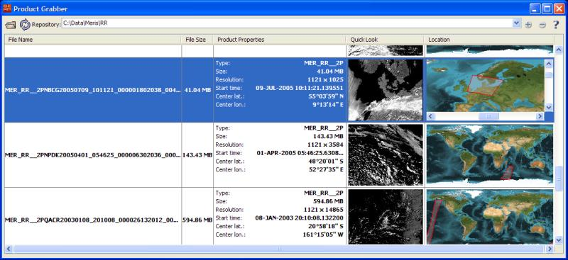

| VISAT`S Product Grabber | |
The Product Grabber represents a rigorous simplification of accessing your data products. It provides you with a product preview, so you can easily decide which products you want to open or import.
You will get the following information on every supported product:

The Product Grabber organizes your product data directories as repositories. You can simply add a new repository by clicking the add button and selecting the desired directory. If the Product Grabber searches the selected directory recursively all subdirectories storing supported data products will be added to the repository list too. At the next start up of VISAT the Product Grabber will remember all added repositories.
To open a data product, simply double click on it or select one or multiple from the table and click the open product button.
Click into the Quick Look or World Map to zoom into it.
If you have added or removed data products in the directories storing your products you can refresh the selected reposistory by clicking the refresh button.
If you want to remove a repository click the remove button. The remove action will only remove the selected repository from the repository list, it will not delete the linked directory on the respective data storage.
Note: The Product Grabber will cache its data in the home directory of the
active user.You will find the cached data in your home directory in the subdirectory
/.beam-cache/.productGrabber-Cache
Each column in the table is sortable. If you click on the column header you can cycle through the
three modes (none, ascending, descending) of sorting. The columns are sorted by the following
methods:
In the following the tool buttons of the Product Grabber are explained.
| Opens the selected product. | |
| Refreshes the selected repository. | |
| Adds a directory to the repository list. | |
| Removes a directory from the repository list. |